We propose DynVLA, a driving VLA model that introduces a new CoT paradigm termed Dynamics CoT. DynVLA forecasts compact world dynamics before action generation, enabling more informed and physically grounded decision-making. To obtain compact dynamics representations, DynVLA introduces a Dynamics Tokenizer that compresses future evolution into a small set of dynamics tokens. Considering the rich environment dynamics in interaction-intensive driving scenarios, DynVLA decouples ego-centric and environment-centric dynamics, yielding more accurate world dynamics modeling. We then train DynVLA to generate dynamics tokens before actions through SFT and RFT, improving decision quality while maintaining latency-efficient inference. Compared to Textual CoT and Visual CoT, Dynamics CoT captures the evolution of the world in a compact, interpretable, and efficient form. Extensive experiments on NAVSIM, Bench2Drive, and a large-scale in-house dataset demonstrate that DynVLA consistently outperforms Textual CoT and Visual CoT methods, validating the effectiveness and practical value of Dynamics CoT.
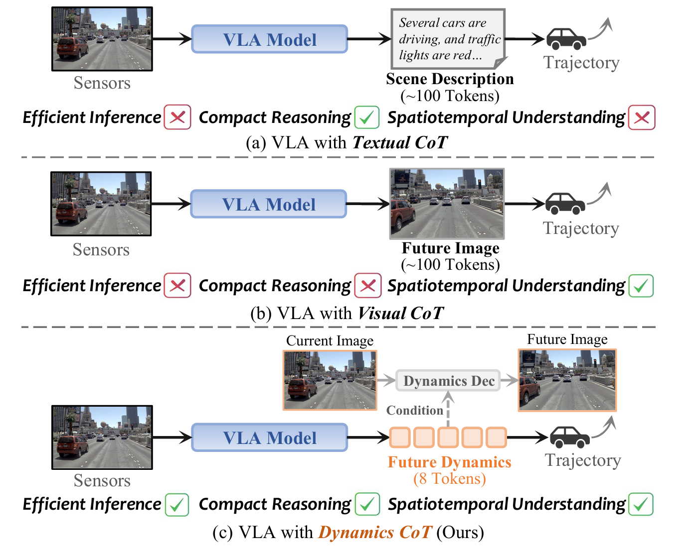
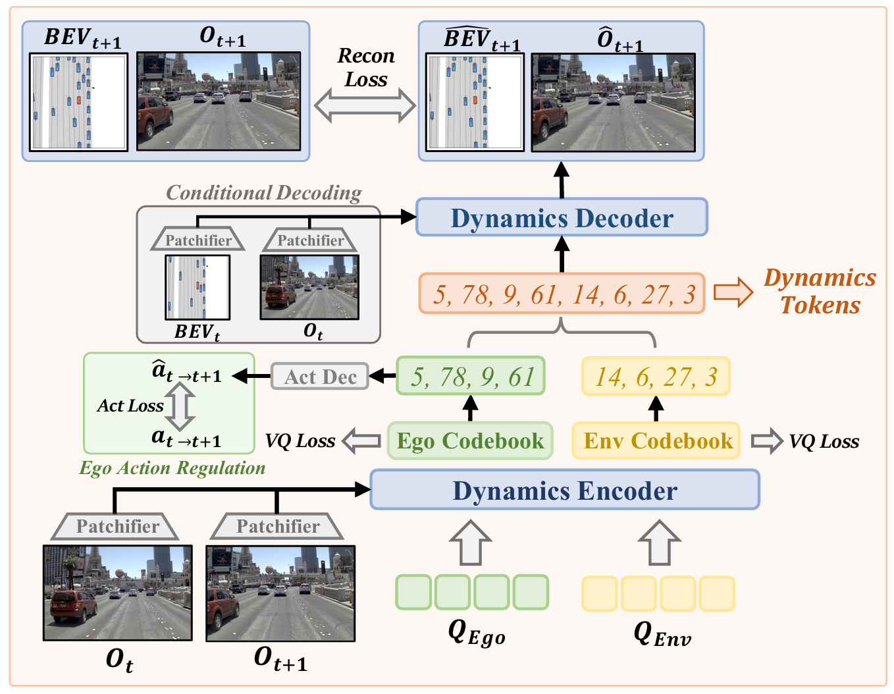
Given adjacent image observations, a dynamics encoder extracts ego-centric and environment-centric dynamics, which are discretized via VQ codebooks. Then, the ego-centric dynamics are regularized by GT ego action, and the combined dynamics are decoded to reconstruct the future image and BEV map conditioned on each current state.
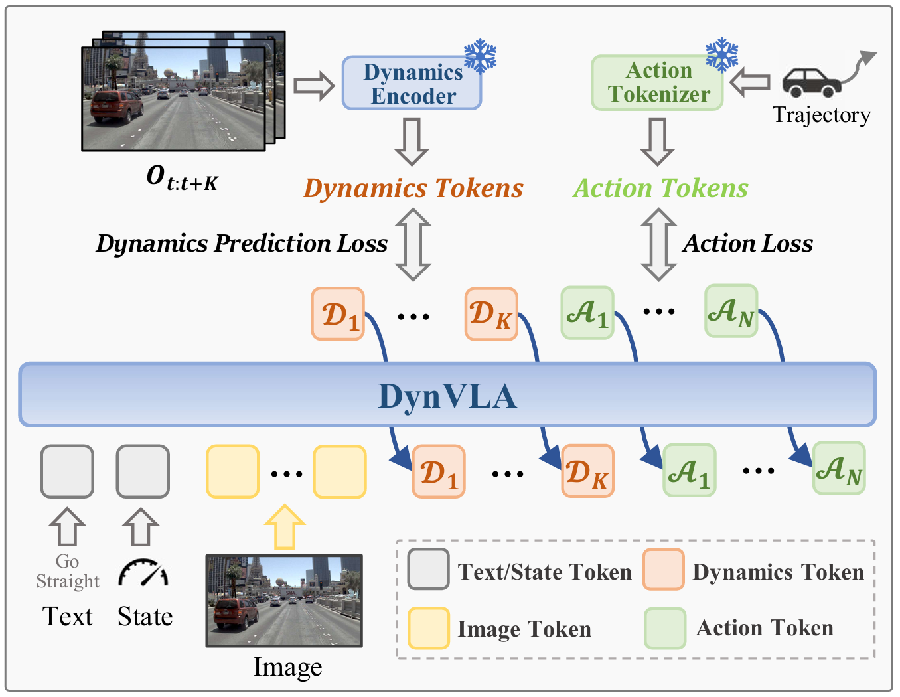
DynVLA is supervised to first generate discrete dynamics tokens followed by action tokens, forming structured Dynamics CoT modeling.
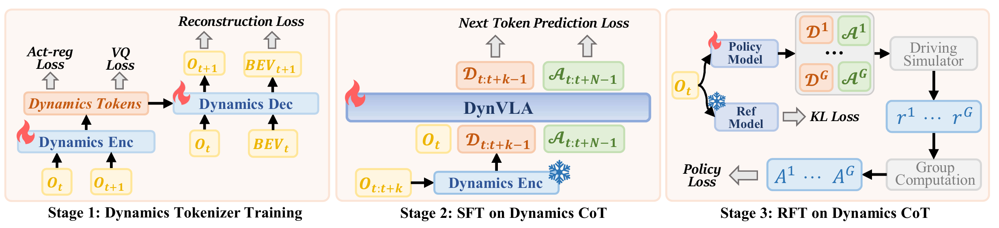
DynVLA first learns a Dynamics Tokenizer by reconstructing future states from adjacent frames, producing discrete dynamics tokens. It then performs SFT on Dynamics CoT, training the model to generate dynamics tokens before action tokens. Finally, the policy is optimized via RFT with trajectory-level reward and KL regularization.
We extract discrete dynamics tokens from one scene, inject them into another, and decode the resulting future states.
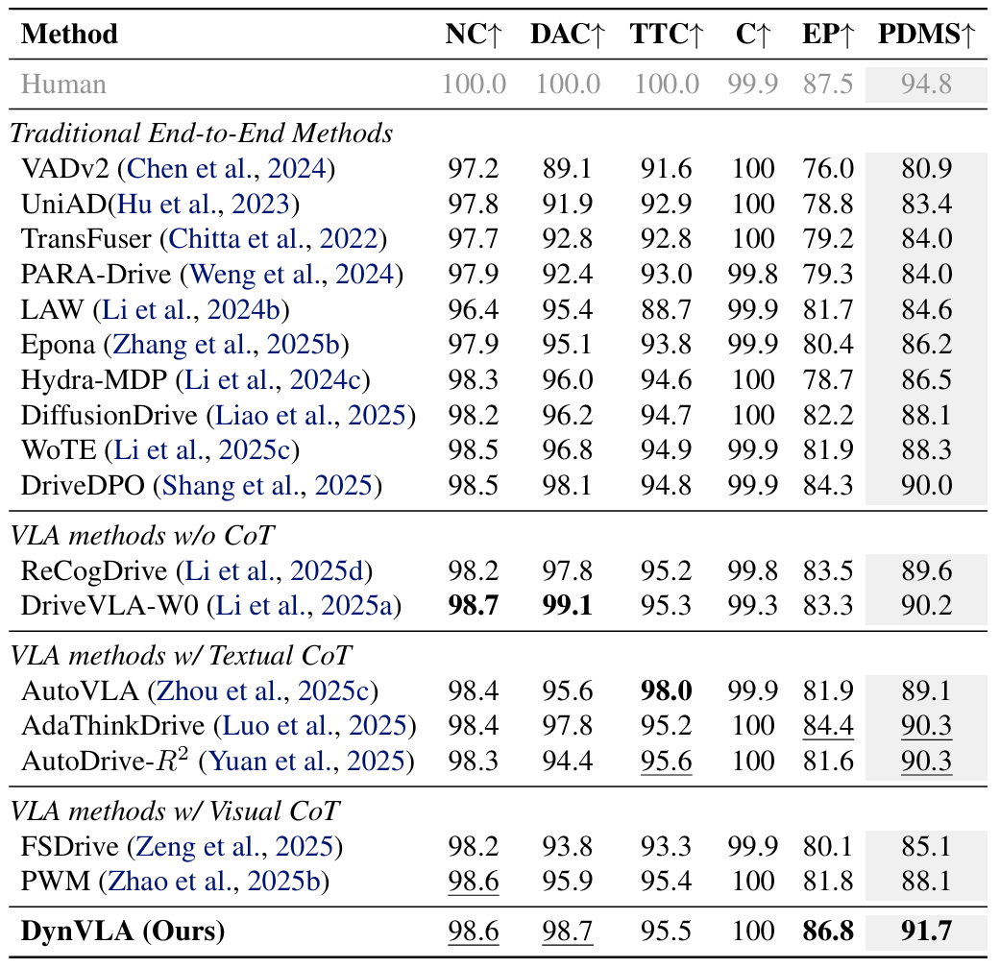
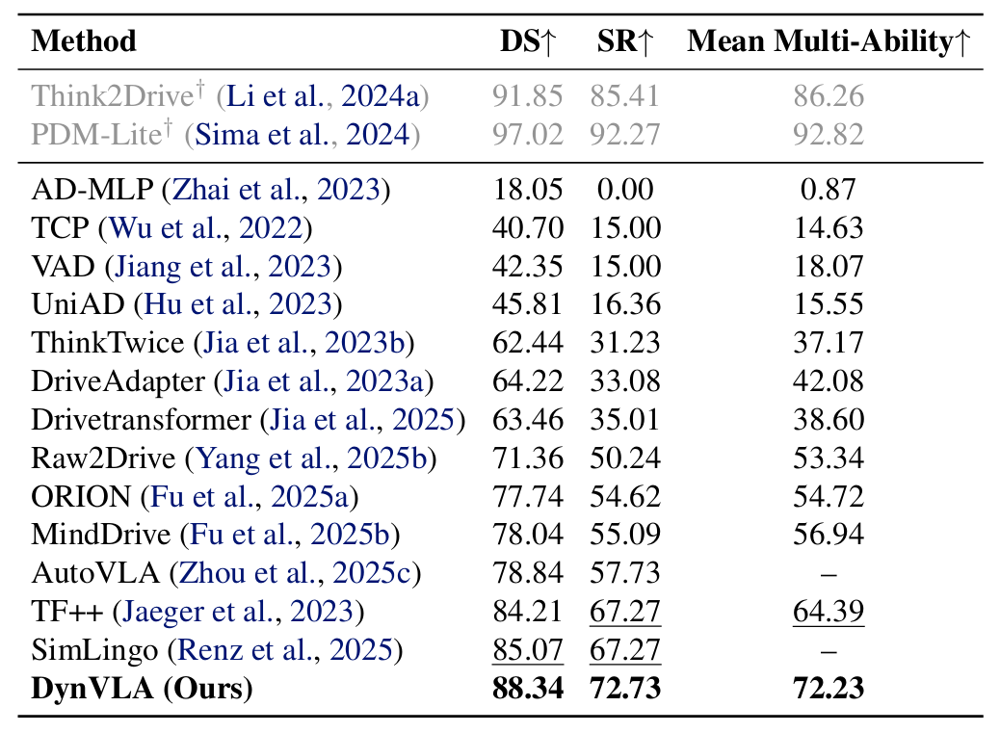
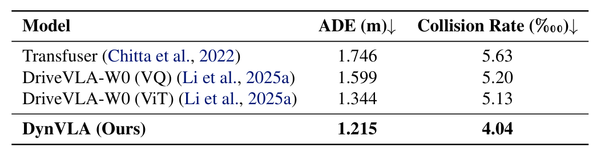
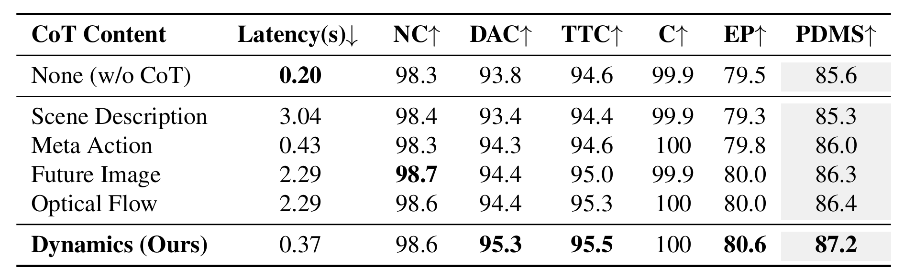
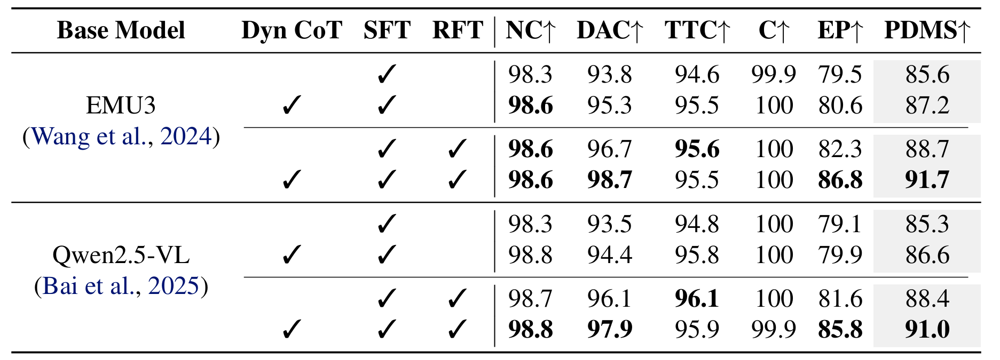
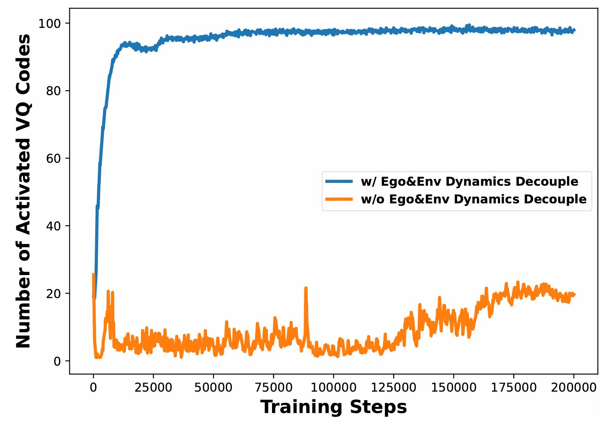
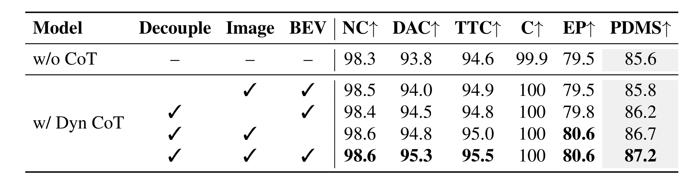
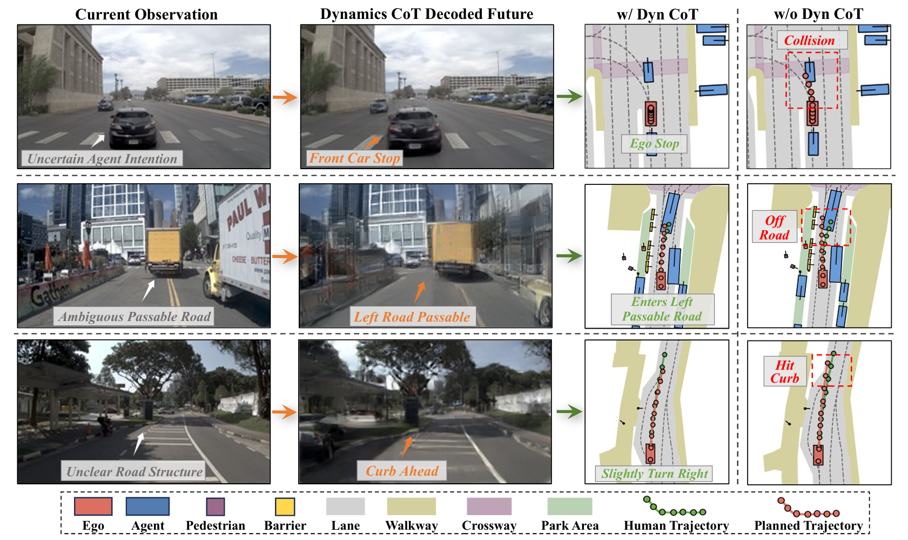
Dynamics CoT improves planning by reasoning over future dynamics. The first two columns show the current observation and the future decoded by reasoned dynamics. The third and last columns compare planning results with and without Dynamics CoT. Compared to direct action prediction, Dynamics CoT provides intent-aware, foresighted, and constraint-compliant future dynamics, enabling safer and more feasible planning in challenging scenarios.